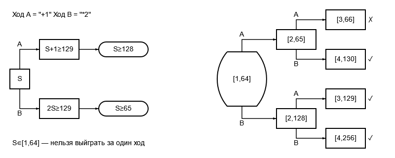
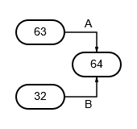
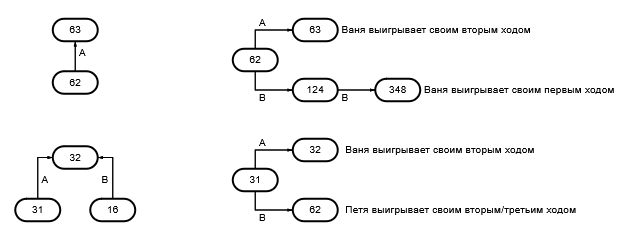

О разделе "Теория"
В этом разделе представлен уникальный способ решения заданий 19, 20 и 21 из ЕГЭ по информатике. Мы подробно разберем алгоритм решения, который поможет вам научиться применять его к любым подобным задачам. Этот метод основан на построении наглядных схем и пошаговом анализе возможных ходов игроков.
Условие задания №19
Два игрока, Петя и Ваня, играют в следующую игру. Перед игроками лежит куча камней. Игроки ходят по очереди, первый ход делает Петя. За один ход игрок может добавить в кучу один камень или увеличить количество камней в куче в два раза. Для того чтобы делать ходы, у каждого игрока есть неограниченное количество камней.
Игра завершается в тот момент, когда количество камней в куче становится не менее 129. Победителем считается игрок, сделавший последний ход, т. е. первым получивший кучу из 129 или больше камней.
В начальный момент в куче было S камней, 1 ≤ S ≤ 128.
Будем говорить, что игрок имеет выигрышную стратегию, если он может выиграть при любых ходах противника.
Задание: Укажите такое значение S, при котором Петя не может выиграть за один ход, но при любом ходе Пети Ваня может выиграть своим первым ходом.
Условие взято из демоверсии ЕГЭ по информатике 2024 г.
Решение задачи можно представить в виде схемы:
Как составить подобную схему для похожего задания
Шаг 1. Обозначим ходы
Обратимся к условию задачи. Сказано, что "за один ход игрок может добавить в кучу один камень или увеличить количество камней в куче в два раза". Назовём ходы:
- Ход A: добавить один камень.
- Ход B: увеличить количество камней в два раза.
Шаг 2. Получаем диапазон значений S, при котором первым ходом не выиграет Петя
Представим в виде схемы, при каких диапазонах S может победить Петя первым ходом. Чтобы получить диапазоны, составляем неравенства и затем их решаем.
Например:
- Если S ≥ 65, Петя может выиграть первым ходом, сделав ход B (увеличив количество камней до 130).
- Если S ∈ [1, 64], Петя не сможет выиграть первым ходом, так как Ваня сможет ответить победным ходом.
Возможные вопросы:
- Почему во втором неравенстве решением является S ≥ 65, а не 64,5?
Ответ: количество камней всегда целое, поэтому дробные значения не рассматриваются. - Почему не 64?
Ответ: если S = 64, то после хода B Петя получит 128 камней, что меньше 129. Для победы первым ходом нужно минимум 129 камней.
Шаг 3. Формируем ответ, представив схематично игру
Теперь, отталкиваясь от диапазона S ∈ [1, 64], мы можем представить все исходы игры:
- Если Петя делает ход A (добавляет один камень), Ваня может сделать ход B (удвоить количество камней) и выиграть.
- Если Петя делает ход B (удваивает количество камней), Ваня также может сделать ход B и выиграть.
Уточнение: В некоторых случаях Ваня может добавить один камень (ход A), но это не приведёт к победе, так как количество камней останется меньше 129. Этот момент можно опустить, так как он не влияет на итоговый ответ.
Таким образом, при S = 64 Ваня всегда может выиграть своим первым ходом.
Ответ: 64.
Условие задания №20
Два игрока, Петя и Ваня, играют в следующую игру. Перед игроками лежит куча камней. Игроки ходят по очереди, первый ход делает Петя. За один ход игрок может добавить в кучу один камень или увеличить количество камней в куче в два раза. Для того чтобы делать ходы, у каждого игрока есть неограниченное количество камней.
Игра завершается в тот момент, когда количество камней в куче становится не менее 129. Победителем считается игрок, сделавший последний ход, т. е. первым получивший кучу из 129 или больше камней.
В начальный момент в куче было S камней, 1 ≤ S ≤ 128.
Будем говорить, что игрок имеет выигрышную стратегию, если он может выиграть при любых ходах противника.
Задание: Найдите два наименьших значения S, при которых у Пети есть выигрышная стратегия, причём одновременно выполняются два условия:
- Петя не может выиграть за один ход;
- Петя может выиграть своим вторым ходом независимо от того, как будет ходить Ваня.
Условие взято из демоверсии ЕГЭ по информатике 2024 г.
Решение задачи можно представить в виде схемы:
Как составить подобную схему для похожего задания
Шаг 1. Анализ условия
В этой задаче мы сталкиваемся с той же игровой ситуацией, что и в задании 19, но с другим требованием: нужно найти такие начальные значения S, при которых Петя сможет гарантированно победить своим вторым ходом, независимо от действий Вани.
Шаг 2. Построение схемы
Вспомним, что в задании 19 мы нашли значение S = 64, при котором Ваня может победить своим первым ходом. Теперь нам нужно найти значения S, из которых Петя может привести игру к этой позиции (S = 64) своим первым ходом. Это можно сделать двумя способами:
- Начав с S = 63 и добавив один камень (ход A)
- Начав с S = 32 и удвоив количество камней (ход B)
Шаг 3. Проверка условий
Проверим, что для найденных значений S выполняются все условия задачи:
- При S = 32 или S = 63 Петя не может выиграть первым ходом (так как 32 × 2 = 64 < 129 и 63 + 1 = 64 < 129)
- После любого хода Вани Петя сможет выиграть своим вторым ходом
Шаг 4. Формирование ответа
Найденные значения S = 32 и S = 63 удовлетворяют всем условиям задачи. Важно записать их в порядке возрастания.
Ответ: 32 63
Условие задания №21
Два игрока, Петя и Ваня, играют в следующую игру. Перед игроками лежит куча камней. Игроки ходят по очереди, первый ход делает Петя. За один ход игрок может добавить в кучу один камень или увеличить количество камней в куче в два раза. Для того чтобы делать ходы, у каждого игрока есть неограниченное количество камней.
Игра завершается в тот момент, когда количество камней в куче становится не менее 129. Победителем считается игрок, сделавший последний ход, то есть первым получивший кучу из 129 или больше камней.
В начальный момент в куче было S камней, 1 ≤ S ≤ 128.
Будем говорить, что игрок имеет выигрышную стратегию, если он может выиграть при любых ходах противника.
Задание: Найдите минимальное значение S, при котором одновременно выполняются два условия:
- у Вани есть выигрышная стратегия, позволяющая ему выиграть первым или вторым ходом при любой игре Пети;
- у Вани нет стратегии, которая позволит ему гарантированно выиграть первым ходом.
Условие взято из демоверсии ЕГЭ по информатике 2024 г.
Решение задачи можно представить в виде схемы:
Как составить подобную схему для похожего задания
Шаг 1. Анализ условия
В этой задаче нам нужно найти позиции, из которых Ваня может гарантированно выиграть первым или вторым ходом, но не может выиграть первым ходом. Для этого нам понадобятся результаты предыдущих заданий.
Шаг 2. Построение схемы
Рассмотрим значение S = 62. Петя своим первым ходом может получить две позиции:
- Из S = 62 получить 63 ходом A (добавить один камень)
- Из S = 62 получить 124 ходом B (удвоить количество камней)
Шаг 3. Проверка условий
Проверим, что для S = 62 выполняются все условия задачи:
- При S = 124 (после хода B Пети) Ваня может выиграть первым ходом, удвоив количество камней
- При S = 63 (после хода A Пети) Ваня добавляет один камень, и после любого хода Пети Ваня выигрывает своим вторым ходом
- Ваня не может выиграть первым ходом из начальной позиции S = 62
Почему другие позиции не подходят:
- При S = 31: Ваня может выиграть первым ходом, добавив один камень и получив 32, что противоречит условию
- При S = 16: Если Ваня сделает ход B (удвоит количество камней), получится 32, но это не приведет к победе, так как Петя сможет ответить ходом B и получить 64, а затем Ваня выиграет. Это создает более длинную цепочку ходов, чем требуется по условию
Шаг 4. Формирование ответа
Значение S = 62 удовлетворяет всем условиям задачи: у Вани есть выигрышная стратегия на первый или второй ход, но нет стратегии на первый ход из начальной позиции.
Ответ: 62